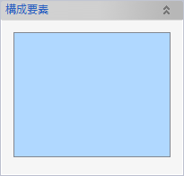
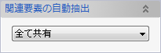
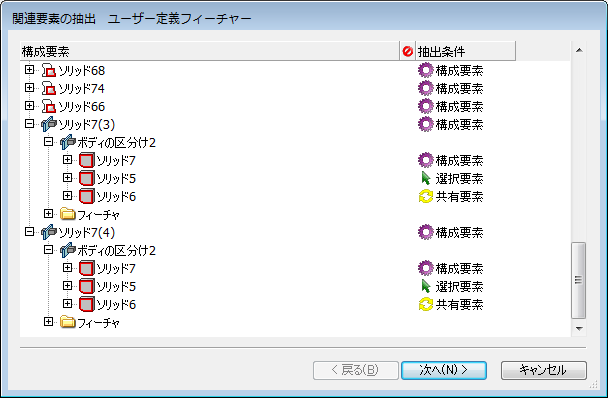
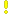
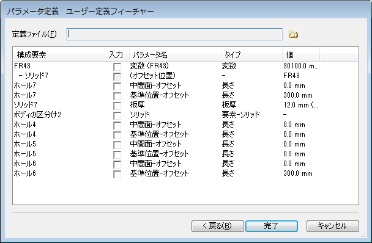
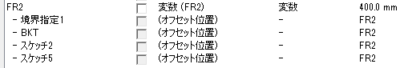

新規 ユーザー定義フィーチャー
新規 ユーザー定義フィーチャー
ユーザー定義フィーチャーを作成して定義ファイル(.evoudf)に保存します。
操作方法
ユーザー定義フィーチャーを構成する要素を選択します。
選択した構成要素の関連要素をどのように抽出するかのオプションを選択します。
OKボタンで関連要素の抽出条件と可変要素の定義を行うダイアログが表示されます。
関連要素の抽出条件では、個別に抽出条件を変更し次へ進みます。
パラメータ定義では、可変要素を選択して完了ボタンでユーザー定義フィーチャーが作成されます。
パラメータ
- 構成要素

ユーザー定義フィーチャーを構成する要素を選択します。
- 関連要素の自動抽出

選択した構成要素の関連要素で、構成要素として選択されていない要素をどのように抽出するか選択します。
ここで選択したオプションが自動抽出の際のデフォルト値として使用されます。- パラメータ化
挿入時に選択する要素とします。
独自フィーチャコマンドとして作成する場合に使用します。 - 全て共有
共有要素として扱います。
同一ドキュメント内で相似形状を作成する場合に使用します。 - 全て構成要素
構成要素として扱います。
別のドキュメントへ挿入する場合や完全なコピーを作成する場合に使用します。
関連要素がスケッチの場合は、デフォルトで「構成要素」となります。
- パラメータ化
関連要素の抽出

構成要素の関連要素がツリー形式で表示されます。
ここでは、抽出条件を個別に変更できます。
- 構成要素
構成要素とその関連要素がアイコンと要素名で表示されます。
 選択されている行の要素はドキュメントウィンドウ内でハイライトされます。
選択されている行の要素はドキュメントウィンドウ内でハイライトされます。
- エラー
抽出エラーがある場合に、アイコンが表示されます。
抽出エラーの要素
 関連する要素内にエラーがある - 抽出条件
個別の要素の抽出条件を変更することができます。
絶対座標系やXY平面などのグローバル要素と変数は常に「共有要素」となります。
コマンドダイアログで選択された要素は、常に「構成要素」となります。
フィーチャー等の内部的な要素は抽出条件を設定できません。
抽出エラーがある場合、ユーザー定義フィーチャーを作成することができません。
エラー要素の関連要素が「選択要素」となっている場合、パラメータ化の対象外要素である可能性があります。
この場合、「選択要素」を「構成要素」か「共有要素」に変更すると、抽出エラーを解決することができます。
個別に抽出条件を変更した場合、「次へ」ボタンで抽出条件の整合性チェックが行われます。
エラーが無ければ可変要素の定義ページへと進みます。
可変要素の定義

-
定義ファイル
右のアイコンをクリックして定義ファイル名を指定します。
-
構成要素
構成要素の要素名です。リストで選択されている行の要素はドキュメントウィンドウ内でハイライトされます。
非表示要素は表示されませんのでハイライトされません。(表示しておいてください。)
-
入力
可変要素とする場合はチェックしてください。関連要素などの必須なもののチェックははずすことはできません。
-
パラメータ名
文字部分をクリックして編集することができます。ユーザー定義フィーチャーの挿入時にわかりやすいように一意になるような名称を設定しておきます。
-
タイプ,値
パラメータの種類と既定値(定義時の値）を表示しています。入力としない場合の既定値になります。
変数パラメータの場合、その変数を使用している要素のパラメータが列挙されます。

変数の入力をチェックして定義ファイルを作成すると、要素の関連を保ったまま挿入時に変数パラメータを置き換えることができます。